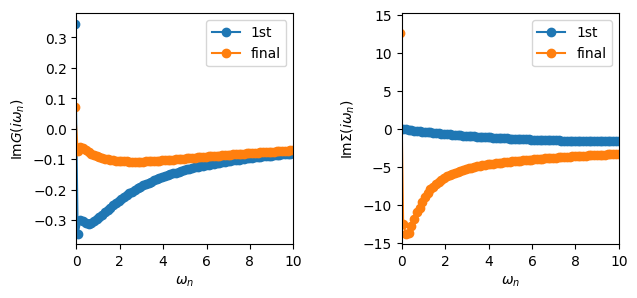
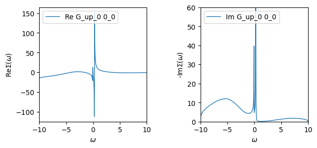
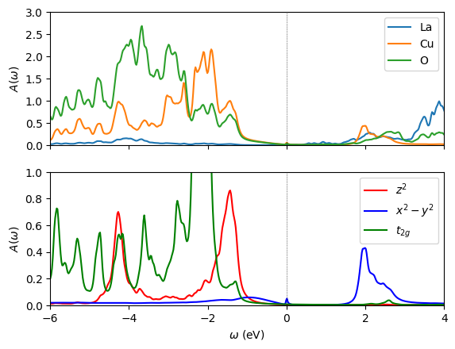

La\(_{2}\)CuO\(_{4}\)
The electronic structure of La\(_{2}\)CuO\(_{4}\) is dominated by strong hybridization between Cu(\(3d\)) and O(\(2p\)) states, placing it in the charge-transfer insulator regime of the Zaanen-Sawatzky-Allen classification diagram. Its most famous role is as the parent compound of high-T\(_{c}\) cuprate superconductors, becoming a superconductor upon hole or electron doping. Standard DFT predicts a metallic state because it cannot capture the strong local Coulomb repulsion and charge-transfer gap that arise from the interplay of copper and oxygen orbitals. DFT+DMFT, particularly in a large energy window including both Cu and O states, is essential for describing the experimentally observed insulating behavior, spectral weight transfer, and the multi-orbital nature of the correlations.
In this tutorial, we learn how to write a DMFT calculation for La\(_{2}\)CuO\(_{4}\) using TRIQS/ModEST. Specifically, we will cover - a OneBodyElementsOnGrid object - manipulating the embedding object - the double-counting term in the DMFT loop - writing the DMFT loop - plotting the \(k\)-summed spectral function projected onto different atoms and orbitals.
🧪 Exercise 0: Import Modest and Load the DFT data
Load the triqs_modest module and use the function one_body_elements_from_dft_converter to load in the HDF5 which was produced by the Wien2k DFT converter in ref_data/la2cuo4.h5.
💡 Tip: The function
one_body_elements_from_dft_converterreturns the target density and the one-body elements.
Print both the target electron density and the one_body_elements and pause for a moment to see if this information makes sense for La\(_{2}\)CuO\(_{4}\).
[1]:
import triqs_modest as modest
target_density, obe = modest.one_body_elements_from_dft_converter("../ref_data/la2cuo4.h5")
print(f"target_density= {round(target_density)}e- ( 6e- x 4 O + 9e- x 1 Cu = 33e-)\n")
print(obe)
Warning: could not identify MPI environment!
target_density= 33e- ( 6e- x 4 O + 9e- x 1 Cu = 33e-)
One body elements representing a downfolding from (restricted) Bloch 𝓑 to Correlated space 𝓒 from DFT code [one_body_elements_on_grid]
H:
Band dispersion ε^σ(k) on a grid [band_dispersion]:
Number of bands (max): 44
Represented on a fixed grid of 40 points.
Shape of H[k_idx, σ, ν, ν'] = [40, 1, 44, 44]
ε^σ(k) is matrix valued? = false
C_space:
Local space [orbital_set]:
Total dimension [M]: 5
Number of correlated atoms: 1
Number of inequivalent correlated atoms = 1
Atomic decomposition:
dim_a: 5
a: 0
irreps: [1, 1, 1, 1, 1]
P:
Downfolding projector P^σ_mν(k) on a grid [downfolding_projector]:
Shape of P[k_idx, σ, m, ν] = [40, 1, 5, 44]
IBZ = true
[I]rreduicible [B]rillouin [Z]one symmetry operations from the DFT code [ibz_symmetry_ops]
Number of symmetry ops: 16
Number of rotations per op: 1
Starting serial run at: 2026-06-28 07:59:13.425863
🔎 Explanation of the OBE
We are studying La\(_{2}\)CuO\(_{4}\) within a large-energy window, which fully includes the hybridization between the O(\(2p\)) and Cu(\(3d\)) states. The OneBodyElementsOnGrid is composed of four pieces that represent the one-body physics that is obtained from DFT and will be used in the DMFT calculation.
The one-body elements (OBE) class contains four pieces:
🔹 H: Band dispersion \(\varepsilon^{\sigma}(k)\)
This is the DFT Kohn-Sham eigenvalues: \(\varepsilon^{\sigma}(k)\) is the band energy for spin (\(\sigma\)) at \(k\).
🔹 P: Downfolding projector
This is the projector that we introduced in Tutorial 05. Importantly, we print the shape of the projector so that the user can confirm that this is what they expect.
🔹 IBZ: Irreducible Brillouin zone Ops
Some DFT codes perform the summation in the Brillouin zone within the irreducible Brillouin zone. For those cases, to obtain observables like the local Green’s function, we must symmetrize. Internally, we read these IBZ symmetry operations and store them away. We apply them whenever we perform a \(k\)-summation. In practice, there is no need to worry about them 🙂. The 16 symmetry operations correspond to the \(I4/mmm\) space group.
## ⚛️ The role of covalency in the metal-insulator transition of La\(_{2}\)CuO\(_{4}\) Our goal is to study La\(_{2}\)CuO\(_{4}\) within DFT+DMFT, where we treat only the Cu-\(d_{x^{2}-y^{2}}\) as our quantum impurity which we solve within DMFT. All other states will be treated at the Hartree level within DFT. While we will not study the effects of charge self-consistency, the script that you will develop in the notebook can easily be adapted to perform charge self-consistent calculations.
Within DFT + DMFT, the so-called “double-counting” term plays a critical role in achieving the correct physics. Previously, Wang et. al. calculated the metal-insulator phase diagram for La\(_{2}\)CuO\(_{4}\) in the plane of Hubbard interaction and \(N_{d}\) where \(N_{d}\) is the total filling of the Cu-\(d_{x^{2}-y^{2}}\) orbitals. We will develop a script using TRIQS/ModEST to reproduce the results in Figure 4 (top panel) of their manuscript which correctly captures the insulating behavior of La\(_{2}\)CuO\(_{4}\) but requires an adjustment to the double-counting term.
🧪 Exercise 1: Create an Embedding Description
Create an embedding from the local space in one-body elements and print it out to the screen.
[2]:
E = modest.make_embedding(obe.C_space)
print(E)
Embedding: 1 impurities
Σ_embed block decomposition:
dim_α: 1 1 1 1 1
α: 0 1 2 3 4
Impurities
Block dimensions, dim_γ for all γ:
[n_imp = 0] dim_γ = 1 1 1 1 1
γ = 0 1 2 3 4
Up until now we’ve only seen rather simple embeddings. However, to see the full information contained within the embedding class, use the description method to get a full print out.
[3]:
print(E.description(True))
Embedding:
Spin index (σ/τ) names: ["up", "down"]
Σ_embed block decomposition:
dim_α: 1 1 1 1 1
α: 0 1 2 3 4
Impurities
Block dimensions, dim_γ for all γ:
[n_imp = 0] dim_γ = 1 1 1 1 1
γ = 0 1 2 3 4
Gf Block structures for solvers as names, [dim]:
[imp_idx = 0] up_0 [1], up_1 [1], up_2 [1], up_3 [1], up_4 [1], down_0 [1], down_1 [1], down_2 [1], down_3 [1], down_4 [1]
Mapping ψ(α,σ) = (imp_idx, γ, τ)
| σ = 0 / up σ = 1 / down
-------+-------------------------------+------------------------------+
α = 0 | (imp_idx = 0, γ = 0, τ = 0) (imp_idx = 0, γ = 0, τ = 1)
α = 1 | (imp_idx = 0, γ = 1, τ = 0) (imp_idx = 0, γ = 1, τ = 1)
α = 2 | (imp_idx = 0, γ = 2, τ = 0) (imp_idx = 0, γ = 2, τ = 1)
α = 3 | (imp_idx = 0, γ = 3, τ = 0) (imp_idx = 0, γ = 3, τ = 1)
α = 4 | (imp_idx = 0, γ = 4, τ = 0) (imp_idx = 0, γ = 4, τ = 1)
🔎 Explanation of Embedding
In DMFT, the embedding tells you how the correlated subspace (from the DFT/Wannier model) is mapped to one or more impurity problems. Thus, it is essential to be able to flexibly construct impurity model(s) for your correlated subspace and ensure the correct assignment of local orbitals and spin channels. Below is a detailed breakdown of the printout from the Embedding object.
🔹 spin index (\(\sigma/\tau\)) names: [“up”, “down”]
These are the names of the block-diagonal spin indices \(\sigma\) used in the impurity model. They correspond to the spin-up and spin-down electrons and will be used to construct the fermionic creation and annihilation operators for the impurity model.
We distinguish between:
\(\sigma\): the spin index in the embedded problem, and
\(\tau\): the internal spin index used by the impurity solver (e.g., in the impurity solver Green’s function blocks).
This distinction allows us to support more generic embeddings.
🔹 \(\Sigma\)_embed block decomposition
This section describes the block structure of the embedded self-energy \(\Sigma_{\text{embed}}^{\sigma}(\omega)\). In our case, there are 5 orbitals each representing a \(1\times1\) block in the self-energy (see \(\alpha\) and dim_\(\alpha\)).
🔹 Impurities
This describes the structure of the impurity problems constructed from the local space:
n_imp = 0: There is one impurity solver (index 0).For this impurity solver: there are 5 correlated orbitals with dimension 1 (
dim_γ).The impurity Green’s function will therefore have 10 blocks: 5 for spin-up and 5 for spin-down.
The solver’s block structure (gf_struct) is printed:
[imp_idx = 0] up_0 [1], up_1 [1], up_2 [1], up_3 [1], up_4 [1], down_0 [1], down_1 [1], down_2 [1], down_3 [1], down_4 [1]
This means: - The impurity solver has 10 blocks, 5 for each spin, - Each block is of dimension 1.
🔹 Mapping ψ(α,σ) = (imp_idx, γ, τ)
This table gives the mapping from the embedded indices (α,σ) to the impurity solver indices (imp_idx, γ, τ).
For this case, the mapping is simple: the five blocks of the impurity self-energy are directly mapped to the five blocks in the embedded self-energy.
🧪 Exercise 3: Write the DMFT loop
The DMFT loop can be written identically to the one that you worked on in the previous tutorials. You will make a slight modification to the static part of the self-energy and the local impurity levels to incorporate the double-counting correctly.
[5]:
import numpy as np
from triqs.gfs import MeshImFreq
from triqs.operators import n
from triqs_cthyb import solve_generic, TailFitParams
# Coulomb interaction
U = 14
# double-counting density
N_d = 1.1
# Matsubara Mesh
mesh = MeshImFreq(beta = 10.0, statistic = "Fermion", n_iw = 250)
# load in density and obe
target_density, obe = modest.one_body_elements_from_dft_converter("../ref_data/la2cuo4.h5")
# create embedding
E = modest.make_embedding(obe.C_space).split_imp(0, [1]).drop_imp(1)
# setup-solver parameters (realistic solver parameters: length_cycle = 9000, n_cycles = 9e+6, n_warmup_cycles = 1e+4)
solver_params = dict(length_cycle=100, n_cycles = int(1e+5),
n_warmup_cycles = int(1e+3),
perform_tail_fit=True,
imag_threshold = 1e-6)
tail_fit_params = TailFitParams(fit_min_w=24,fit_max_w=28)
# make an empty self-energy
Sigma_imp_dynamic, Sigma_imp_infty = E.make_zero_imp_self_energies(mesh)[0]
# compute the double-counting and set it equal to the static part of the self-energy
Sigma_DC = U*(N_d - 0.5)
for SH in Sigma_imp_infty: SH += Sigma_DC
# interaction Hamiltonian
h_int = U*n('up_0',0)*n('down_0',0)
# number of DMFT iterations
n_dmft_loops = 2
epsilon_d = E.extract(modest.atomic_levels_and_delta.impurity_levels(obe))[0]
for n_iter in range(n_dmft_loops):
# 1. subtract the double-counting to computed the embedded self-energy
Sigma_imp_infty_minus_dc = [block - Sigma_DC for block in Sigma_imp_infty]
# 2. embed the impurity self-energy
Sigma_C_dynamic, Sigma_C_infty = E.embed([Sigma_imp_dynamic], [Sigma_imp_infty_minus_dc])
# 3. find the chemical potential
mu = modest.find_chemical_potential(target_density, obe, Sigma_C_dynamic, Sigma_C_infty, verbosity=False)
# 4. compute the local Green's function
Gloc = E.extract(modest.local_gf.gloc(obe, mu, Sigma_C_dynamic, Sigma_C_infty))[0]
# 5. Compute the effective impurity levels
E_imp = [ block.real - mu - Sigma_DC for block in epsilon_d]
# 6. Compute hybridization function
Delta_iw = modest.hybridization(E_imp, Gloc, Sigma_imp_dynamic, Sigma_imp_infty)
# 7. solve the quantum impurity problem
solver_results = solve_generic(Delta_iw, E_imp, h_int, postprocess=tail_fit_params, **solver_params)
print(f"Δn = |n_lattice - n_impurity| = {abs(Gloc.total_density()-solver_results.G_iw.total_density())}")
# 8. update the impurity self-energy
Sigma_imp_dynamic, Sigma_imp_infty = solver_results.Sigma_dynamic, solver_results.Sigma_HartreeFock
Solving impurity problem with CT-HYB (postprocess=TailFitParams(fit_min_n=None, fit_max_n=None, fit_min_w=24, fit_max_w=28, fit_max_moment=3))
Execution time: 0.0830559 seconds
!------------------------------------------------------------------------------------!
! WARNING: Using default high-frequency tail fitting parameters in the CTHYB solver. !
! You should check that the fitting range is suitable for your calculation! !
!------------------------------------------------------------------------------------!
╔╦╗╦═╗╦╔═╗ ╔═╗ ┌─┐┌┬┐┬ ┬┬ ┬┌┐
║ ╠╦╝║║═╬╗╚═╗ │ │ ├─┤└┬┘├┴┐
╩ ╩╚═╩╚═╝╚╚═╝ └─┘ ┴ ┴ ┴ ┴ └─┘
The local Hamiltonian of the problem:
-10.4968*c_dag('down_0',0)*c('down_0',0) + -10.4968*c_dag('up_0',0)*c('up_0',0) + 14*c_dag('down_0',0)*c_dag('up_0',0)*c('up_0',0)*c('down_0',0)
Using autopartition algorithm to partition the local Hilbert space
Found 4 subspaces.
[Rank 0] Performing warmup phase...
[Rank 0] 07:59:15 83.40% done, ETA 00:00:00, cycle 834 of 1000, 8.33e+03 cycles/sec
[Rank 0] 07:59:15 100.00% done, ETA 00:00:00, cycle 1000 of 1000, 8.09e+03 cycles/sec
[Rank 0] Performing accumulation phase...
[Rank 0] 07:59:15 0.82% done, ETA 00:00:12, cycle 822 of 100000, 8.22e+03 cycles/sec
[Rank 0] 07:59:17 17.43% done, ETA 00:00:10, cycle 17428 of 100000, 8.20e+03 cycles/sec
[Rank 0] 07:59:19 38.08% done, ETA 00:00:07, cycle 38079 of 100000, 8.18e+03 cycles/sec
[Rank 0] 07:59:22 63.61% done, ETA 00:00:04, cycle 63614 of 100000, 8.13e+03 cycles/sec
[Rank 0] 07:59:26 95.42% done, ETA 00:00:00, cycle 95423 of 100000, 8.10e+03 cycles/sec
[Rank 0] 07:59:27 100.00% done, ETA 00:00:00, cycle 100000 of 100000, 8.10e+03 cycles/sec
[Rank 0] Collect results: Waiting for all MPI processes to finish accumulating...
[Rank 0] Warmup duration: 0.1236 seconds [00:00:00]
[Rank 0] Simulation duration: 12.3477 seconds [00:00:12]
[Rank 0] Number of measures: 100000
[Rank 0] Cycles (measures) / second: 8.10e+03
[Rank 0] Measurement durations (total = 0.1788):
[Rank 0] Measure Auto-correlation time: Duration = 0.0102
[Rank 0] Measure Average order: Duration = 0.0021
[Rank 0] Measure Average sign: Duration = 0.0023
[Rank 0] Measure Density Matrix for local static observable: Duration = 0.1230
[Rank 0] Measure G_tau measure: Duration = 0.0413
[Rank 0] Move durations (total = 11.6378):
[Rank 0] Move set Insert two operators: Duration = 1.8234
[Rank 0] Move Insert Delta_up_0: Duration = 0.8300
[Rank 0] Move Insert Delta_down_0: Duration = 0.8319
[Rank 0] Move set Remove two operators: Duration = 1.4811
[Rank 0] Move Remove Delta_up_0: Duration = 0.6667
[Rank 0] Move Remove Delta_down_0: Duration = 0.6566
[Rank 0] Move set Insert four operators: Duration = 2.7216
[Rank 0] Move Insert Delta_up_0_up_0: Duration = 0.7184
[Rank 0] Move Insert Delta_up_0_down_0: Duration = 0.5619
[Rank 0] Move Insert Delta_down_0_up_0: Duration = 0.5613
[Rank 0] Move Insert Delta_down_0_down_0: Duration = 0.7124
[Rank 0] Move set Remove four operators: Duration = 1.5796
[Rank 0] Move Remove Delta_up_0_up_0: Duration = 0.3190
[Rank 0] Move Remove Delta_up_0_down_0: Duration = 0.3968
[Rank 0] Move Remove Delta_down_0_up_0: Duration = 0.3994
[Rank 0] Move Remove Delta_down_0_down_0: Duration = 0.2972
[Rank 0] Move Shift one operator: Duration = 4.0321
[Rank 0] Move statistics:
[Rank 0] Move set Insert two operators: Proposed = 1999075, Accepted = 73595, Rate = 0.0368
[Rank 0] Move Insert Delta_up_0: Proposed = 998674, Accepted = 36934, Rate = 0.0370
[Rank 0] Move Insert Delta_down_0: Proposed = 1000401, Accepted = 36661, Rate = 0.0366
[Rank 0] Move set Remove two operators: Proposed = 2000516, Accepted = 73704, Rate = 0.0368
[Rank 0] Move Remove Delta_up_0: Proposed = 1000305, Accepted = 36879, Rate = 0.0369
[Rank 0] Move Remove Delta_down_0: Proposed = 1000211, Accepted = 36825, Rate = 0.0368
[Rank 0] Move set Insert four operators: Proposed = 1999910, Accepted = 5800, Rate = 0.0029
[Rank 0] Move Insert Delta_up_0_up_0: Proposed = 499977, Accepted = 1681, Rate = 0.0034
[Rank 0] Move Insert Delta_up_0_down_0: Proposed = 500451, Accepted = 1160, Rate = 0.0023
[Rank 0] Move Insert Delta_down_0_up_0: Proposed = 499523, Accepted = 1231, Rate = 0.0025
[Rank 0] Move Insert Delta_down_0_down_0: Proposed = 499959, Accepted = 1728, Rate = 0.0035
[Rank 0] Move set Remove four operators: Proposed = 2000774, Accepted = 5751, Rate = 0.0029
[Rank 0] Move Remove Delta_up_0_up_0: Proposed = 500097, Accepted = 1707, Rate = 0.0034
[Rank 0] Move Remove Delta_up_0_down_0: Proposed = 499496, Accepted = 1164, Rate = 0.0023
[Rank 0] Move Remove Delta_down_0_up_0: Proposed = 500618, Accepted = 1232, Rate = 0.0025
[Rank 0] Move Remove Delta_down_0_down_0: Proposed = 500563, Accepted = 1648, Rate = 0.0033
[Rank 0] Move Shift one operator: Proposed = 1999725, Accepted = 774521, Rate = 0.3873
Total number of measures: 100000
Total cycles (measures) / second: 8.10e+03
Average sign: 1
Average order: 11.5556
Auto-correlation time: 18.9482 cycles
Δn = |n_lattice - n_impurity| = 0.35402179975365056
Solving impurity problem with CT-HYB (postprocess=TailFitParams(fit_min_n=None, fit_max_n=None, fit_min_w=24, fit_max_w=28, fit_max_moment=3))
!------------------------------------------------------------------------------------!
! WARNING: Using default high-frequency tail fitting parameters in the CTHYB solver. !
! You should check that the fitting range is suitable for your calculation! !
!------------------------------------------------------------------------------------!
╔╦╗╦═╗╦╔═╗ ╔═╗ ┌─┐┌┬┐┬ ┬┬ ┬┌┐
║ ╠╦╝║║═╬╗╚═╗ │ │ ├─┤└┬┘├┴┐
╩ ╩╚═╩╚═╝╚╚═╝ └─┘ ┴ ┴ ┴ ┴ └─┘
The local Hamiltonian of the problem:
Execution time: 0.0915636 seconds
-11.0136*c_dag('down_0',0)*c('down_0',0) + -11.0136*c_dag('up_0',0)*c('up_0',0) + 14*c_dag('down_0',0)*c_dag('up_0',0)*c('up_0',0)*c('down_0',0)
Using autopartition algorithm to partition the local Hilbert space
Found 4 subspaces.
[Rank 0] Performing warmup phase...
[Rank 0] 07:59:28 87.90% done, ETA 00:00:00, cycle 879 of 1000, 8.79e+03 cycles/sec
[Rank 0] 07:59:28 100.00% done, ETA 00:00:00, cycle 1000 of 1000, 8.95e+03 cycles/sec
[Rank 0] Performing accumulation phase...
[Rank 0] 07:59:28 0.88% done, ETA 00:00:11, cycle 884 of 100000, 8.83e+03 cycles/sec
[Rank 0] 07:59:30 18.85% done, ETA 00:00:09, cycle 18847 of 100000, 8.87e+03 cycles/sec
[Rank 0] 07:59:33 41.62% done, ETA 00:00:06, cycle 41624 of 100000, 8.94e+03 cycles/sec
[Rank 0] 07:59:36 70.08% done, ETA 00:00:03, cycle 70082 of 100000, 8.96e+03 cycles/sec
[Rank 0] 07:59:39 100.00% done, ETA 00:00:00, cycle 100000 of 100000, 8.92e+03 cycles/sec
[Rank 0] Collect results: Waiting for all MPI processes to finish accumulating...
[Rank 0] Warmup duration: 0.1117 seconds [00:00:00]
[Rank 0] Simulation duration: 11.2124 seconds [00:00:11]
[Rank 0] Number of measures: 100000
[Rank 0] Cycles (measures) / second: 8.92e+03
[Rank 0] Measurement durations (total = 0.1723):
[Rank 0] Measure Auto-correlation time: Duration = 0.0100
[Rank 0] Measure Average order: Duration = 0.0023
[Rank 0] Measure Average sign: Duration = 0.0022
[Rank 0] Measure Density Matrix for local static observable: Duration = 0.1179
[Rank 0] Measure G_tau measure: Duration = 0.0398
[Rank 0] Move durations (total = 10.5059):
[Rank 0] Move set Insert two operators: Duration = 1.7797
[Rank 0] Move Insert Delta_up_0: Duration = 0.8092
[Rank 0] Move Insert Delta_down_0: Duration = 0.8112
[Rank 0] Move set Remove two operators: Duration = 1.2632
[Rank 0] Move Remove Delta_up_0: Duration = 0.5694
[Rank 0] Move Remove Delta_down_0: Duration = 0.5331
[Rank 0] Move set Insert four operators: Duration = 2.5815
[Rank 0] Move Insert Delta_up_0_up_0: Duration = 0.6850
[Rank 0] Move Insert Delta_up_0_down_0: Duration = 0.5322
[Rank 0] Move Insert Delta_down_0_up_0: Duration = 0.5324
[Rank 0] Move Insert Delta_down_0_down_0: Duration = 0.6664
[Rank 0] Move set Remove four operators: Duration = 1.1524
[Rank 0] Move Remove Delta_up_0_up_0: Duration = 0.2571
[Rank 0] Move Remove Delta_up_0_down_0: Duration = 0.2562
[Rank 0] Move Remove Delta_down_0_up_0: Duration = 0.2572
[Rank 0] Move Remove Delta_down_0_down_0: Duration = 0.2156
[Rank 0] Move Shift one operator: Duration = 3.7291
[Rank 0] Move statistics:
[Rank 0] Move set Insert two operators: Proposed = 1999272, Accepted = 73498, Rate = 0.0368
[Rank 0] Move Insert Delta_up_0: Proposed = 997570, Accepted = 36614, Rate = 0.0367
[Rank 0] Move Insert Delta_down_0: Proposed = 1001702, Accepted = 36884, Rate = 0.0368
[Rank 0] Move set Remove two operators: Proposed = 2000290, Accepted = 73355, Rate = 0.0367
[Rank 0] Move Remove Delta_up_0: Proposed = 1000147, Accepted = 36551, Rate = 0.0365
[Rank 0] Move Remove Delta_down_0: Proposed = 1000143, Accepted = 36804, Rate = 0.0368
[Rank 0] Move set Insert four operators: Proposed = 2000347, Accepted = 5514, Rate = 0.0028
[Rank 0] Move Insert Delta_up_0_up_0: Proposed = 499957, Accepted = 1622, Rate = 0.0032
[Rank 0] Move Insert Delta_up_0_down_0: Proposed = 500184, Accepted = 1176, Rate = 0.0024
[Rank 0] Move Insert Delta_down_0_up_0: Proposed = 500415, Accepted = 1158, Rate = 0.0023
[Rank 0] Move Insert Delta_down_0_down_0: Proposed = 499791, Accepted = 1558, Rate = 0.0031
[Rank 0] Move set Remove four operators: Proposed = 1999801, Accepted = 5583, Rate = 0.0028
[Rank 0] Move Remove Delta_up_0_up_0: Proposed = 500942, Accepted = 1605, Rate = 0.0032
[Rank 0] Move Remove Delta_up_0_down_0: Proposed = 499311, Accepted = 1203, Rate = 0.0024
[Rank 0] Move Remove Delta_down_0_up_0: Proposed = 500082, Accepted = 1222, Rate = 0.0024
[Rank 0] Move Remove Delta_down_0_down_0: Proposed = 499466, Accepted = 1553, Rate = 0.0031
[Rank 0] Move Shift one operator: Proposed = 2000290, Accepted = 751895, Rate = 0.3759
Total number of measures: 100000
Total cycles (measures) / second: 8.92e+03
Average sign: 1
Average order: 9.73868
Auto-correlation time: 12.9099 cycles
Δn = |n_lattice - n_impurity| = 0.05622677118904429
🧪 Exercise 4: Load the converged results
Now that you have your DMFT loop, we provide you with pre-converged results for this calculation at \(\beta = 50.0\) 1/eV. Load the converged data from the file ref_data/lco-x2y2-Nd=1.1-beta=50.0-U=14.0.h5. Plot the self-energy and Green’s function from the first and last iteration and explain what you see.
[6]:
from h5 import HDFArchive
import numpy as np
from triqs.gfs import MeshImFreq
from triqs.plot.mpl_interface import oplot, plt
with HDFArchive('../ref_data/lco-x2y2-Nd=1.1-beta=50.0-U=14.0.h5', 'r') as ar:
last_iter = str(len(ar)-1)
Sigma_iw_first = ar['0']['Sigma_imp_list'][0]
Sigma_iw_last = ar[last_iter]['Sigma_imp_list'][0]
G_iw_first = ar['0']['Gimp_freq_list'][0]
G_iw_last = ar[last_iter]['Gimp_freq_list'][0]
mu_last = ar[last_iter]['mu']
fig, ax = plt.subplots(1,2,sharex=True, figsize=(7,3))
oplot(G_iw_first['up_0'].imag, 'o-', axes=ax[0], label='1st');
oplot(G_iw_last['up_0'].imag, 'o-', axes=ax[0], label='final'); ax[0].set_ylabel(r'Im$G(i\omega_{n})$')
oplot(Sigma_iw_first['up_0'].imag, 'o-', axes=ax[1], label='1st');
oplot(Sigma_iw_last['up_0'].imag, 'o-', axes=ax[1], label='final'); ax[1].set_ylabel(r'Im$\Sigma(i\omega_{n})$')
ax[0].legend(); ax[0].set_xlim(0, 10)
plt.subplots_adjust(wspace=0.5)
plt.show()

At the first iteration, both the Green’s function and self-energy indicate metallic behavior. However, at convergence, they both show insulating behavior.
🧪 Exercise 5: Analytically continue the self-energy
Now let us analytically continue the self-energy onto the real axis so that we can plot real-frequency spectra. Use the maximum entropy utilities from before to analytically continue the self-energy from the last iteration. Plot your result.
[7]:
from triqs_tutorials_utils.maxent import Sigma_w_from_maxent
Sigma_w = Sigma_w_from_maxent(Sigma_iw_last, alpha_min=1e-2, alpha_max=1e2, error=0.04)
Calculating diagonal elements.
Calling MaxEnt for element 0 0
/mnt/home/wentzell/opt/triqs/lib/python3.12/site-packages/triqs/gfs/backwd_compat/gf_imtime.py:58: FutureWarning: Please use Gf(mesh=MeshImTime(..), ..) instead of GfImTime
warnings.warn("Please use Gf(mesh=MeshImTime(..), ..) instead of GfImTime", FutureWarning)
2026-06-28 07:59:42.046098
MaxEnt run
TRIQS application maxent
Copyright(C) 2018 Gernot J. Kraberger
Copyright(C) 2018 Simons Foundation
Authors: Gernot J. Kraberger and Manuel Zingl
This program comes with ABSOLUTELY NO WARRANTY.
This is free software, and you are welcome to redistributeit under certain conditions; see file LICENSE.
Please cite this code and the appropriate original papers (see documentation).
Minimal chi2: 0.004380137005280689
scaling alpha by a factor 6151 (number of data points)
alpha[ 0] = 6.15100000e+05, chi2 = 2.01199773e+03, n_iter= 4
alpha[ 1] = 5.09698170e+05, chi2 = 2.00508285e+03, n_iter= 3
alpha[ 2] = 4.22357705e+05, chi2 = 1.99682641e+03, n_iter= 3
alpha[ 3] = 3.49983659e+05, chi2 = 1.98698876e+03, n_iter= 3
alpha[ 4] = 2.90011430e+05, chi2 = 1.97529619e+03, n_iter= 3
alpha[ 5] = 2.40315876e+05, chi2 = 1.96143969e+03, n_iter= 3
alpha[ 6] = 1.99136013e+05, chi2 = 1.94507542e+03, n_iter= 3
alpha[ 7] = 1.65012618e+05, chi2 = 1.92582755e+03, n_iter= 3
alpha[ 8] = 1.36736514e+05, chi2 = 1.90329441e+03, n_iter= 3
alpha[ 9] = 1.13305724e+05, chi2 = 1.87705883e+03, n_iter= 3
alpha[10] = 9.38899692e+04, chi2 = 1.84670341e+03, n_iter= 3
alpha[11] = 7.78012444e+04, chi2 = 1.81183149e+03, n_iter= 3
alpha[12] = 6.44694389e+04, chi2 = 1.77209352e+03, n_iter= 3
alpha[13] = 5.34221346e+04, chi2 = 1.72721802e+03, n_iter= 3
alpha[14] = 4.42678657e+04, chi2 = 1.67704525e+03, n_iter= 3
alpha[15] = 3.66822470e+04, chi2 = 1.62156011e+03, n_iter= 3
alpha[16] = 3.03964789e+04, chi2 = 1.56092022e+03, n_iter= 3
alpha[17] = 2.51878225e+04, chi2 = 1.49547428e+03, n_iter= 3
alpha[18] = 2.08717071e+04, chi2 = 1.42576622e+03, n_iter= 3
alpha[19] = 1.72951893e+04, chi2 = 1.35252202e+03, n_iter= 3
alpha[20] = 1.43315336e+04, chi2 = 1.27661827e+03, n_iter= 3
alpha[21] = 1.18757217e+04, chi2 = 1.19903457e+03, n_iter= 3
alpha[22] = 9.84073098e+03, chi2 = 1.12079455e+03, n_iter= 3
alpha[23] = 8.15445061e+03, chi2 = 1.04290279e+03, n_iter= 3
alpha[24] = 6.75712656e+03, chi2 = 9.66285402e+02, n_iter= 3
alpha[25] = 5.59924409e+03, chi2 = 8.91742041e+02, n_iter= 3
alpha[26] = 4.63977315e+03, chi2 = 8.19914543e+02, n_iter= 3
alpha[27] = 3.84471449e+03, chi2 = 7.51274907e+02, n_iter= 3
alpha[28] = 3.18589488e+03, chi2 = 6.86131845e+02, n_iter= 3
alpha[29] = 2.63996876e+03, chi2 = 6.24652361e+02, n_iter= 3
alpha[30] = 2.18759104e+03, chi2 = 5.66892815e+02, n_iter= 3
alpha[31] = 1.81273150e+03, chi2 = 5.12833058e+02, n_iter= 3
alpha[32] = 1.50210686e+03, chi2 = 4.62407605e+02, n_iter= 3
alpha[33] = 1.24470999e+03, chi2 = 4.15529014e+02, n_iter= 4
alpha[34] = 1.03141994e+03, chi2 = 3.72102574e+02, n_iter= 4
alpha[35] = 8.54678679e+02, chi2 = 3.32029590e+02, n_iter= 4
alpha[36] = 7.08223310e+02, chi2 = 2.95206481e+02, n_iter= 4
alpha[37] = 5.86864128e+02, chi2 = 2.61520453e+02, n_iter= 4
alpha[38] = 4.86300718e+02, chi2 = 2.30846399e+02, n_iter= 4
alpha[39] = 4.02969575e+02, chi2 = 2.03046520e+02, n_iter= 4
alpha[40] = 3.33917826e+02, chi2 = 1.77972463e+02, n_iter= 4
alpha[41] = 2.76698593e+02, chi2 = 1.55468522e+02, n_iter= 4
alpha[42] = 2.29284290e+02, chi2 = 1.35374284e+02, n_iter= 4
alpha[43] = 1.89994770e+02, chi2 = 1.17525939e+02, n_iter= 4
alpha[44] = 1.57437793e+02, chi2 = 1.01756613e+02, n_iter= 4
alpha[45] = 1.30459689e+02, chi2 = 8.78967449e+01, n_iter= 4
alpha[46] = 1.08104479e+02, chi2 = 7.57753392e+01, n_iter= 4
alpha[47] = 8.95799949e+01, chi2 = 6.52223032e+01, n_iter= 4
alpha[48] = 7.42298153e+01, chi2 = 5.60714888e+01, n_iter= 4
alpha[49] = 6.15100000e+01, chi2 = 4.81638261e+01, n_iter= 4
MaxEnt loop finished in 0:00:00.931425
appending
Calculating off-diagonal elements using default model from diagonal solution
Calculating diagonal elements.
Calling MaxEnt for element 0 0
2026-06-28 07:59:44.662306
MaxEnt run
TRIQS application maxent
Copyright(C) 2018 Gernot J. Kraberger
Copyright(C) 2018 Simons Foundation
Authors: Gernot J. Kraberger and Manuel Zingl
This program comes with ABSOLUTELY NO WARRANTY.
This is free software, and you are welcome to redistributeit under certain conditions; see file LICENSE.
Please cite this code and the appropriate original papers (see documentation).
Minimal chi2: 0.0033983519804226406
scaling alpha by a factor 6151 (number of data points)
alpha[ 0] = 6.15100000e+05, chi2 = 2.26275473e+03, n_iter= 4
alpha[ 1] = 5.09698170e+05, chi2 = 2.25463155e+03, n_iter= 3
alpha[ 2] = 4.22357705e+05, chi2 = 2.24493641e+03, n_iter= 3
alpha[ 3] = 3.49983659e+05, chi2 = 2.23339024e+03, n_iter= 3
alpha[ 4] = 2.90011430e+05, chi2 = 2.21967500e+03, n_iter= 3
alpha[ 5] = 2.40315876e+05, chi2 = 2.20343262e+03, n_iter= 3
alpha[ 6] = 1.99136013e+05, chi2 = 2.18426604e+03, n_iter= 3
alpha[ 7] = 1.65012618e+05, chi2 = 2.16174306e+03, n_iter= 3
alpha[ 8] = 1.36736514e+05, chi2 = 2.13540422e+03, n_iter= 3
alpha[ 9] = 1.13305724e+05, chi2 = 2.10477549e+03, n_iter= 3
alpha[10] = 9.38899692e+04, chi2 = 2.06938686e+03, n_iter= 3
alpha[11] = 7.78012444e+04, chi2 = 2.02879725e+03, n_iter= 3
alpha[12] = 6.44694389e+04, chi2 = 1.98262541e+03, n_iter= 3
alpha[13] = 5.34221346e+04, chi2 = 1.93058582e+03, n_iter= 3
alpha[14] = 4.42678657e+04, chi2 = 1.87252678e+03, n_iter= 3
alpha[15] = 3.66822470e+04, chi2 = 1.80846701e+03, n_iter= 3
alpha[16] = 3.03964789e+04, chi2 = 1.73862581e+03, n_iter= 3
alpha[17] = 2.51878225e+04, chi2 = 1.66344127e+03, n_iter= 3
alpha[18] = 2.08717071e+04, chi2 = 1.58357194e+03, n_iter= 3
alpha[19] = 1.72951893e+04, chi2 = 1.49987855e+03, n_iter= 3
alpha[20] = 1.43315336e+04, chi2 = 1.41338567e+03, n_iter= 3
alpha[21] = 1.18757217e+04, chi2 = 1.32522578e+03, n_iter= 3
alpha[22] = 9.84073098e+03, chi2 = 1.23657181e+03, n_iter= 3
alpha[23] = 8.15445061e+03, chi2 = 1.14856618e+03, n_iter= 3
alpha[24] = 6.75712656e+03, chi2 = 1.06225517e+03, n_iter= 3
alpha[25] = 5.59924409e+03, chi2 = 9.78536550e+02, n_iter= 3
alpha[26] = 4.63977315e+03, chi2 = 8.98126134e+02, n_iter= 3
alpha[27] = 3.84471449e+03, chi2 = 8.21545527e+02, n_iter= 3
alpha[28] = 3.18589488e+03, chi2 = 7.49129835e+02, n_iter= 3
alpha[29] = 2.63996876e+03, chi2 = 6.81051219e+02, n_iter= 3
alpha[30] = 2.18759104e+03, chi2 = 6.17352286e+02, n_iter= 3
alpha[31] = 1.81273150e+03, chi2 = 5.57982811e+02, n_iter= 3
alpha[32] = 1.50210686e+03, chi2 = 5.02833769e+02, n_iter= 4
alpha[33] = 1.24470999e+03, chi2 = 4.51766288e+02, n_iter= 4
alpha[34] = 1.03141994e+03, chi2 = 4.04629013e+02, n_iter= 4
alpha[35] = 8.54678679e+02, chi2 = 3.61269343e+02, n_iter= 4
alpha[36] = 7.08223310e+02, chi2 = 3.21535732e+02, n_iter= 4
alpha[37] = 5.86864128e+02, chi2 = 2.85275289e+02, n_iter= 4
alpha[38] = 4.86300718e+02, chi2 = 2.52329496e+02, n_iter= 4
alpha[39] = 4.02969575e+02, chi2 = 2.22530715e+02, n_iter= 4
alpha[40] = 3.33917826e+02, chi2 = 1.95701074e+02, n_iter= 4
alpha[41] = 2.76698593e+02, chi2 = 1.71653954e+02, n_iter= 4
alpha[42] = 2.29284290e+02, chi2 = 1.50197199e+02, n_iter= 4
alpha[43] = 1.89994770e+02, chi2 = 1.31136695e+02, n_iter= 4
alpha[44] = 1.57437793e+02, chi2 = 1.14279273e+02, n_iter= 4
alpha[45] = 1.30459689e+02, chi2 = 9.94346137e+01, n_iter= 4
alpha[46] = 1.08104479e+02, chi2 = 8.64165238e+01, n_iter= 4
alpha[47] = 8.95799949e+01, chi2 = 7.50441949e+01, n_iter= 4
alpha[48] = 7.42298153e+01, chi2 = 6.51437798e+01, n_iter= 4
alpha[49] = 6.15100000e+01, chi2 = 5.65502693e+01, n_iter= 4
MaxEnt loop finished in 0:00:00.946496
appending
Calculating off-diagonal elements using default model from diagonal solution
/mnt/home/wentzell/opt/triqs/lib/python3.12/site-packages/triqs/gfs/backwd_compat/gf_refreq.py:56: FutureWarning: Please use Gf(mesh=MeshReFreq(..), ..) instead of GfReFreq
warnings.warn("Please use Gf(mesh=MeshReFreq(..), ..) instead of GfReFreq", FutureWarning)
/mnt/home/wentzell/opt/triqs/lib/python3.12/site-packages/triqs/gfs/gf.py:366: FutureWarning: The use of string indices is no longer supported, converting to target_shape instead.
warnings.warn('The use of string indices is no longer supported, converting to target_shape instead.', FutureWarning)
[8]:
fig, ax = plt.subplots(1,2,sharex=True, figsize=(7,3))
oplot(Sigma_w['up_0'] -Sigma_w['up_0'][0,0](0.0).real, axes=ax[0], mode='R', lw=1)
oplot(-Sigma_w['up_0'].imag, axes=ax[1], lw=1)
ax[0].legend(loc='upper left'); ax[1].legend(loc='upper left')
ax[0].set_xlim(-10,10); ax[1].set_ylim(0, 60);
ax[0].set_ylabel(r'Re$\Sigma(\omega)$'); ax[1].set_ylabel(r'-Im$\Sigma(\omega)$')
plt.subplots_adjust(wspace=0.5)
plt.show()

🧪 Exercise 6: Compute real-frequency spectra
Now we will learn how to plot the atom- and orbital-resolved spectral function – the interacting density of states. The quantity that we want to compute is
where \(G_{\mathrm{proj}}\) is the local Green’s function projected onto atom \(a\) and orbital \(o\). To project the Green’s function onto non-correlated orbitals, we need to load new projectors (referred to as \(\Theta\) projectors), which span a larger space in the correlated space. The \(\Theta\) projectors can then be used to project the lattice Green’s function onto specific atoms and orbitals. To post-process your results, follow the steps below.
🧩 Your Task
Load in a new one-body elements using the function:
one_body_elements_with_theta_projectors. Print out the new obe and try to spot any differences.Embed your real-frequency self-energy using the Embedding (E).
Use the function
projected_spectral_functionto compute \(A_{\mathrm{proj}}(\omega)\).Plot your result.
[9]:
# 1. load in new obe with Θ projectors
obe_proj = modest.one_body_elements_with_theta_projectors('../ref_data/la2cuo4.h5', obe)
print(obe_proj)
One body elements representing a downfolding from (restricted) Bloch 𝓑 to Correlated space 𝓒 from DFT code [one_body_elements_on_grid]
H:
Band dispersion ε^σ(k) on a grid [band_dispersion]:
Number of bands (max): 44
Represented on a fixed grid of 40 points.
Shape of H[k_idx, σ, ν, ν'] = [40, 1, 44, 44]
ε^σ(k) is matrix valued? = false
C_space:
Local space [orbital_set]:
Total dimension [M]: 27
Number of correlated atoms: 7
Number of inequivalent correlated atoms = 4
Atomic decomposition:
dim_a: 5 5 5 3 3 3 3
a: 0 1 2 3 4 5 6
irreps: [5] [5] [1, 1, 1, 1, 1] [3] [3] [3] [3]
P:
Downfolding projector P^σ_mν(k) on a grid [downfolding_projector]:
Shape of P[k_idx, σ, m, ν] = [40, 1, 27, 44]
IBZ = true
[I]rreduicible [B]rillouin [Z]one symmetry operations from the DFT code [ibz_symmetry_ops]
Number of symmetry ops: 16
Number of rotations per op: 7
[10]:
# 2. embed the self-energy minus the double-counting
Sigma_w_proj = E.embed([Sigma_w - Sigma_DC])
[11]:
# 3. compute the projected spectral function
A_proj = modest.projected_spectral_function(obe_proj, obe.P, mu_last, Sigma_w_proj, broadening=0.05)
[12]:
# 4. plot your results.
La = A_proj.per_theta[0,:,:10, :10].trace(axis1=1,axis2=2)
Cu = A_proj.per_theta[0,:,10:15,10:15].trace(axis1=1,axis2=2)
O = A_proj.per_theta[0,:,16:, 16:].trace(axis1=1,axis2=2)
mesh = np.fromiter(Sigma_w_proj['0','up'].mesh, float)
fig, ax = plt.subplots(2,1,sharex=True)
ax[0].plot(mesh, La.real, label= "La")
ax[0].plot(mesh, Cu.real, label= "Cu")
ax[0].plot(mesh, O.real, label= "O")
ax[0].set_ylim(0,3); ax[0].legend(); ax[0].axvline(0.0, color='k', ls='dotted', lw=0.5); ax[0].set_ylabel(r'$A(\omega)$')
ax[1].plot(mesh, A_proj.per_theta[0,:,10,10].real, color='red', label=r'$z^{2}$')
ax[1].plot(mesh, A_proj.per_theta[0,:,11,11].real, color='blue', label=r'$x^{2}-y^{2}$')
ax[1].plot(mesh, 3*A_proj.per_theta[0,:,12,12].real, color='green', label=r'$t_{2g}$')
ax[1].set_ylim(0,2); ax[1].legend(); ax[1].axvline(0.0, color='k', ls='dotted', lw=0.5); ax[1].set_ylabel(r'$A(\omega)$')
ax[1].set_xlim(-6, 4); ax[1].set_ylim(0,1)
ax[1].set_xlabel(r'$\omega$ (eV)')
plt.show()
